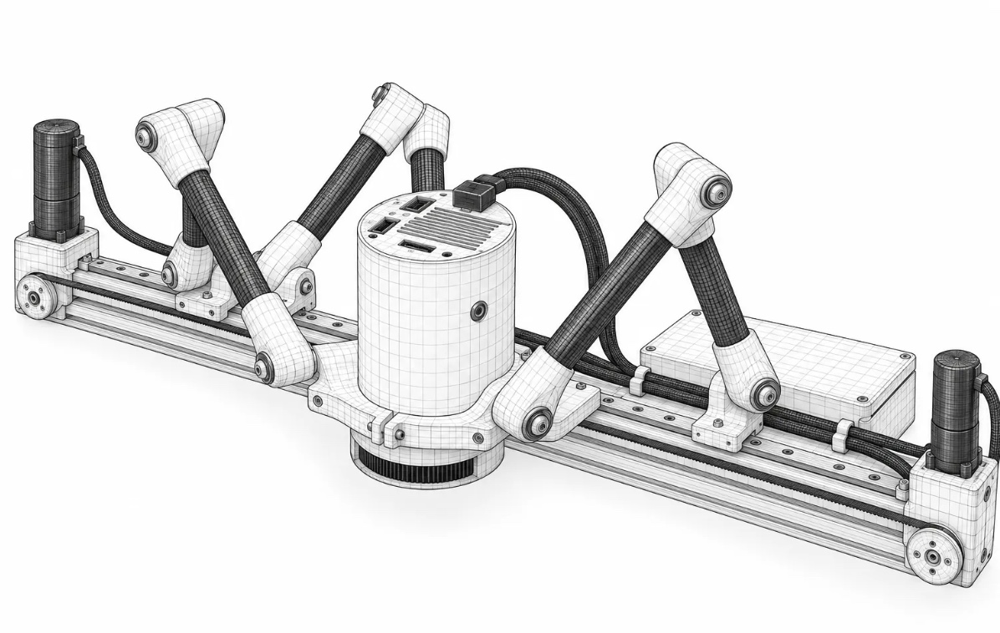

SAAR
Surgical aid for anatomical reconstructions. A calibrated projector on a motorized frame casts the patient's own CT-derived anatomy onto the surgical site, so the surgeon never has to look away at a screen.
Projector calibration · CT registration · 3D reconstruction · U-Net · CNN-LSTM · Intel RealSense T265 · Logitech C920 · Parallel linkage · MGN rails · goBILDA motors

- goBILDA motorsOne at each end of the beam, driving the carriages by belt.
- Parallel linkageTripteron-style arms connecting the carriages to the projector platform.
- MGN rails + beltLinear guides the carriages ride on, along a single beam.
- Calibrated projectorCasts the reconstruction onto the patient. Calibrated so a 3D point maps to a known pixel.
- T265 + C920 camerasIntel RealSense T265 tracking camera and a Logitech C920 watching the site.
- Control interfaceControl electronics for the frame.
Overview
In image-guided surgery the anatomy lives on a monitor beside the table. Surgeons switch between the patient and a fluoroscopy or camera display, translating screen coordinates to body coordinates in their head for the whole procedure.
SAAR overlays the anatomy on the patient instead. Preoperative scans become a 3D model, and a projector on a motorized frame casts it onto the surgical site. The build spans mechanical design, motor control, computer vision and deep learning, using off-the-shelf parts in place of a commercial navigation platform.
How it works
- ReconstructCT → 3D, U-NetPreoperative scans become a 3D model, with abnormalities segmented out.
- RegisterRegistration pipelineThe model is aligned to the patient on the table.
- ProjectCalibrated projectorThe anatomy is cast onto the surgical site, with regions of interest highlighted.
- TrackT265, C920, motorsAs the patient moves, the frame moves the projector to keep the overlay in place.
Motorized frame
The projector sits on a platform carried by a tripteron-style parallel linkage. Its carriages ride MGN linear rails along a single beam, belt-driven by goBILDA motors at each end. Moving the carriages relative to each other repositions the platform, so the projection can be shifted to follow the patient without moving the whole rig.
A parallel linkage keeps the moving mass low, with the motors fixed on the beam instead of riding on the arm. That keeps the platform stiff and quick to correct.
Registration and projection
A custom patient registration pipeline converts preoperative CT into a 3D reconstruction and aligns it with the patient's position on the table. The projector is calibrated like a camera in reverse, so any point on the reconstruction can be mapped to the projector pixel that lands on it. That's what lets the overlay sit on the right spot of a curved body, not just a flat image thrown at it.
Tracking
Patients shift on the table and breathe, so a static overlay loses alignment quickly. An Intel RealSense T265 and a Logitech C920 monitor the site, and a splotch-based tracking algorithm locates it in each frame. Any offset becomes a motor command, and the frame repositions the projector until the overlay is back on target: one closed loop from camera to actuator.
Learning models
- U-Net segmentation: a custom CNN labels structures in the preoperative scans and picks out abnormal regions, which are drawn in a highlight colour in the projection.
- CNN-LSTM motion prediction: thoracic organs move with every breath and heartbeat, which a single scan can't capture. The CNN extracts spatial features, and the LSTM models them over time from biometric signals to predict 3D organ position, so the projection tracks the live anatomy.
Training and validation used large public CT and MRI datasets.
Results
Projection alignment accuracy was measured on the physical rig. The other result is cost: a projector, linear rails and off-the-shelf motors doing the job of a commercial image-guidance system.